菜单编辑器
同时以文本和 640x480 画布编辑游戏菜单(.menu)——读取、绘制和操作都与游戏中一致。
打开菜单#
在模式栏中单击 菜单编辑器。从游戏打开 列出首选项中设置的游戏的所有 ui/ 菜单(从 .pk3 读取,绝不修改);打开文件 或拖放文件可从磁盘打开。路径决定读取方式,与游戏完全一致:ui/jamp/、ui/jk2mp/ 和 ui/MD_MP/ 使用多人模式预处理器(#include、#define、宏、menudef.h),其余按单人模式读取。
引擎消息 逐字显示游戏加载该文件时会输出的内容及行号(例如 Unknown item keyword 'foo' Line #21)。单击跳转到该行;实时诊断在文本中标出它(实时诊断)。
无需项目: 没有打开菜单时,开始屏幕在 新建项目 和 打开项目 旁边显示 打开菜单。它提供 从游戏打开、打开文件 和 打开整个菜单集(menus.txt)。编辑菜单后按 Ctrl+S:游戏文件夹以外的文件会写回原处。GameData 下模组文件夹或 base 中的散装菜单同样保存回原处,之前的版本以 .bak 留在旁边。如果游戏会先从某个 .pk3 读取同一菜单,提示信息会说明。.pk3 中的菜单会询问一次副本保存到哪里:编辑器从不替换游戏的 .pk3 文件,而放在旁边的散装文件在游戏中不生效(同一文件夹中归档先于散装文件)。游戏的程序文件夹(含 .exe)保持锁定。栏顶部的相同按钮保持不变。
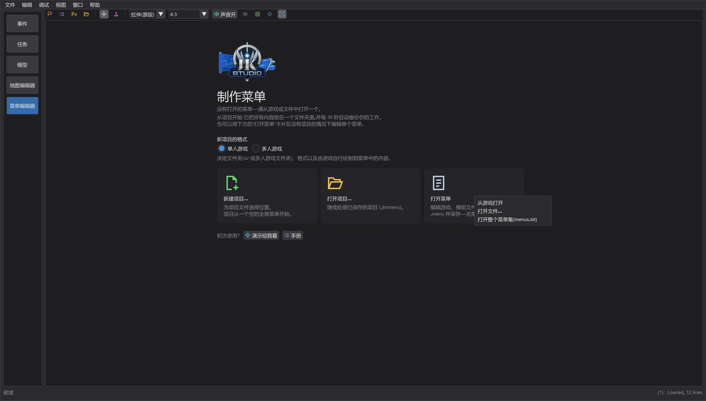
画布与页面#
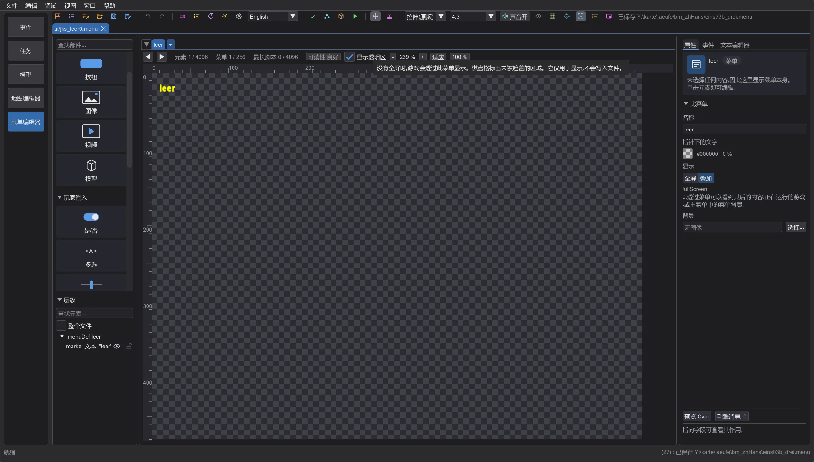
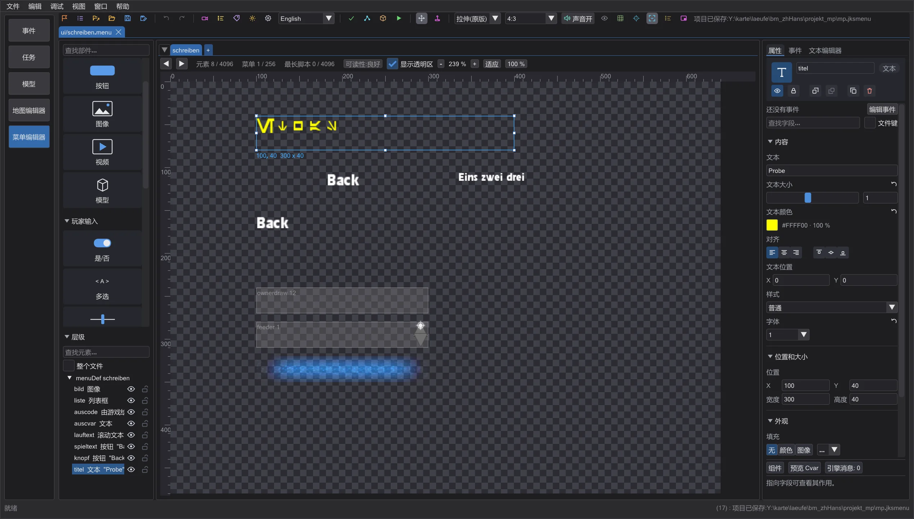
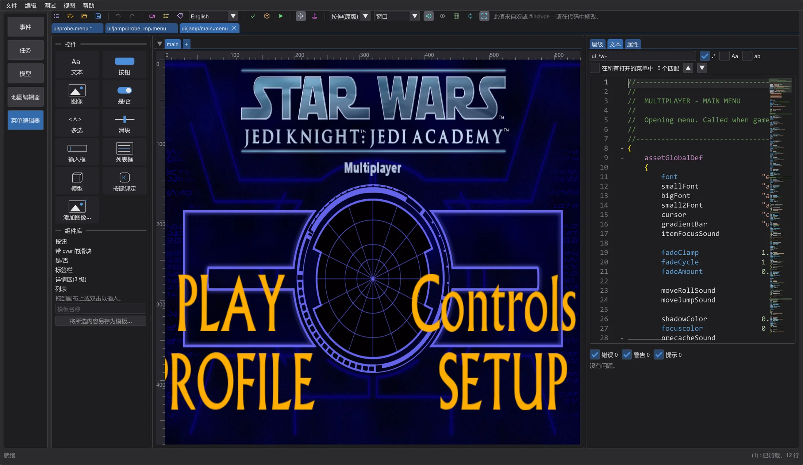
文件中的每个 menuDef 都是画布上方的一个标签页;由具有多个值的 cvar 显示的项(cvarTest + showCvar,如 ui_tab 页面)每个值各有一个标签页。+ 添加新的 menuDef。画布是游戏的虚拟 640x480 屏幕:拉伸(原版) 与原版游戏相同,4:3 加黑边,以及用于检查宽高比的预设分辨率。
- 单击选择(Shift/Ctrl 追加),绝不会移动任何东西。再次按住已选中的元素并拖动才会移动它——整个选择一起移动,算一步撤销;白色手柄调整大小。元素重叠时,按下指的是最前面的元素,即指针下显示边框和名称的那个;Alt+单击在重叠的元素中依次选择,Alt+拖动可移动被遮挡的已选元素。文本中只改变
rect的数字——注释和缩进保持不变。 - 元素保持其类型:属性 顶部的卡片只显示它。如需其他类型,请插入新元素。在文本编辑器中仍可随意编写;如果某行会使游戏丢弃整个菜单,预览会继续读取,保持所有元素位置不变,并在画布上方指出是哪一行。
- Ctrl+Z、Ctrl+Y 和工具栏上的箭头在菜单编辑器中随处可用,并会恢复选择。只有正在输入的字段和文本编辑器使用自己的按键;选择不算一步。
- 缩放: Ctrl+鼠标滚轮围绕指针缩放(25% 到 800%),Ctrl+0 适应,Ctrl+1 为 100%,中键或空格键+拖动移动视图。缩放只是视图:不是撤销步骤,也不写入文件。标尺、手柄、吸附和拖动在每个级别都准确。画布采用工具栏中设置的游戏窗口形状,未设置时为 4:3;它不会随面板拉伸,因此元素高度与游戏中一致。在文本编辑器上方,相同的按键改为更改其字体:以指针下方的内容为准。
- 鼠标指针: 它显示按下后的操作:所选元素的手柄和边缘上是缩放箭头(边缘也可缩放),元素上是移动指针,文本上是文本光标。
- 就地编写文本: 双击画布上的元素并输入。文本以游戏的字体、大小、颜色和换行显示,带光标、选择、复制和粘贴。Esc 放弃,Enter 或单击别处保留(一个撤销步骤);在会换行的元素中 Ctrl+Enter 另起一行。游戏文本(
@MENUS_...)保持不变:元素在项目的文本包中获得自己的文本,其他语言保留翻译。如果文本来自 cvar、游戏本身或图像,双击时会说明。层级 在行中显示文本,属性 将其放在最上方。 - 属性 顶部有一张固定卡片,显示图标、名称和类型,以及一排按钮:可见、锁定、前移、后移、复制、删除。其下是已有的事件、字段搜索和 文件键(在每个易懂名称旁显示文件中的键);搜索两者都能找到。字段按用途分组,折叠的组在右侧显示摘要。只显示游戏对此类元素读取的内容;文件中没有字段的行保留在文件中,并显示在 文件中的其他条目 下。
- 数字和颜色: 单击数字可输入,拖动其标签可更改;单击别处时值保留。一种颜色占一行;单击色块可打开 R、G、B、A 和最近使用的颜色。面板底部的一行会立即说明指针下字段的作用。小箭头标记与游戏默认值不同的值;单击它会从文件中删除该行。
- 对齐保持: 对齐按钮只写入
textalign、textalignx和textaligny。只要这些数字符合规则,居中或右对齐的文本在元素改变大小时保持原位,垂直方向也一样;自己输入数字会为此元素关闭此功能。 - 未选择时,面板显示菜单本身:名称、全屏 或 叠加、背景,以及在“事件”下显示打开、关闭或按 Esc 或 Enter 时发生的操作。选择两个或更多元素时,显示 全部更改(文本大小和颜色,混合值会标记)和 排列,各为一个撤消步骤。组件、预览 Cvar 和 引擎消息 是面板底部的小按钮。
- 空菜单: 全屏时游戏不在其下绘制任何内容。单人游戏中空菜单为黑色(没有
backcolor时,即使background中的普通图像也不可见);多人游戏中,在background或元素遮盖之前,游戏显示灰色默认方框,诊断会提示。非全屏时可透过菜单看到后方;画布用棋盘格标记,可以关闭,且不会写入文件。 - 吸附到边缘 吸附到其他项、屏幕和参考线(从标尺中拖出)的边缘和中心;吸附到网格 吸附到网格。拖动时按 Alt 关闭吸附,Shift 保持方向。方向键移动 1,按住 Shift 移动 10。新建、粘贴或复制的元素不会正好落在同样大小的元素上:它会向右下移动 20 点。按住 Alt 拖动时,元素正好放在松开的位置。框正好重叠时,提示只显示一次。
- 左侧面板以方块显示部件:显示 用于只显示的内容,玩家输入 用于玩家操作的内容,现成组件 用于已设置好的部件(工具提示说明内容和元素数量),我的模板 用于你自己的模板。把方块拖到画布上:框架显示落点,并像移动元素一样吸附。双击会放在中间,紧邻已有内容;单击没有作用。按钮 带有可见填充。将所选内容另存为模板 只有在有选择时可用,然后才询问名称;你的模板显示其元素的小图,可以重命名和删除,删除后可以恢复。
- 图像和视频: 插入时只放置一个框,不打开文件对话框。它保持选中,并在画布上显示该做什么;此提示只在预览中出现,不写入文件。双击框或在 Properties 中单击 选择 可打开选择窗口:带搜索和缩略图的游戏与项目图像及着色器,或游戏视频,以及 从文件。来自文件的视频经过转换窗口;游戏视频不会被复制,只有其着色器进入包。整个屏幕,置于最后 将框拉伸到整个屏幕并置于最后。插入是一个撤消步骤,选择也是一个,包内容同样。菜单视频在游戏中无声。未选择时游戏显示灰色方框,检查会指出,导出会警告。
- 卡片上的 上移一层/下移一层 改变绘制顺序(游戏按文件顺序绘制)。锁防止项被移动;眼睛写入
visible。
选择、右键单击、管理菜单#
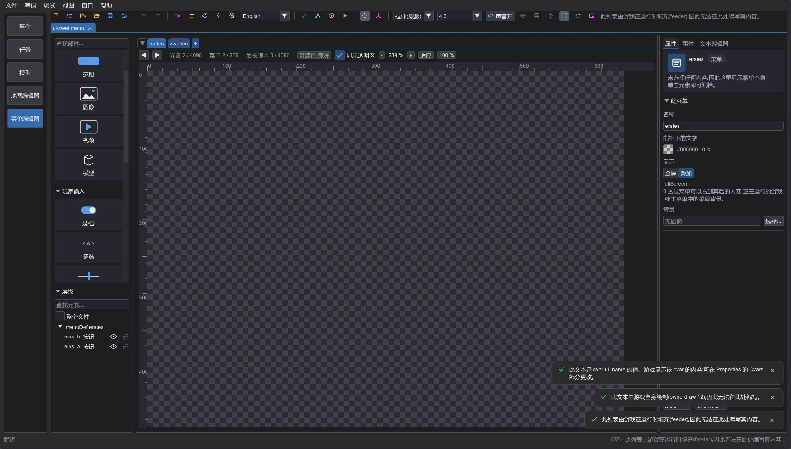
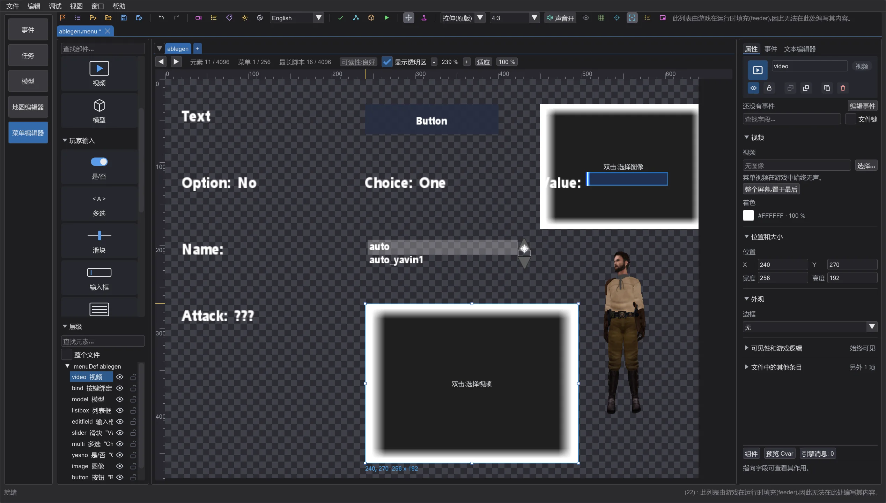
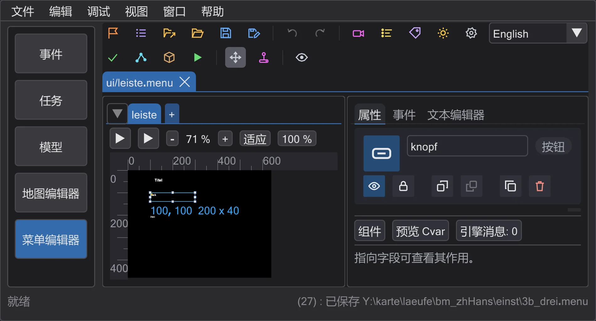
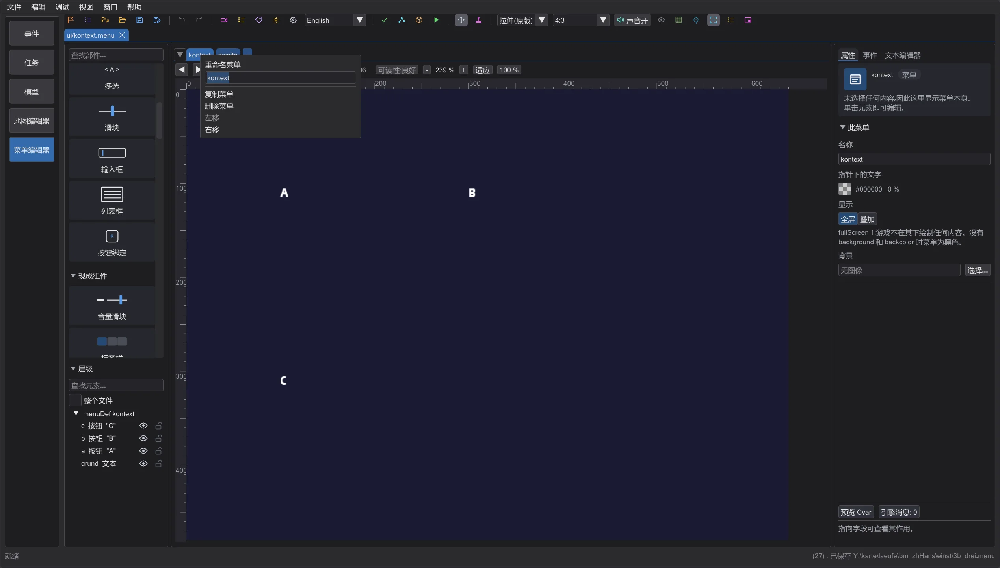
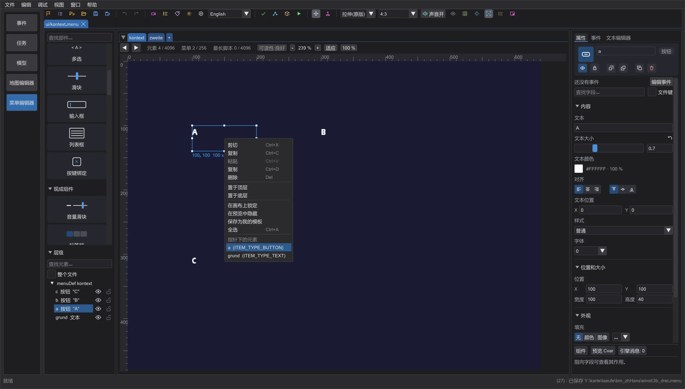
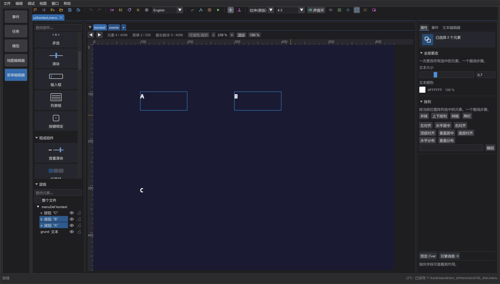
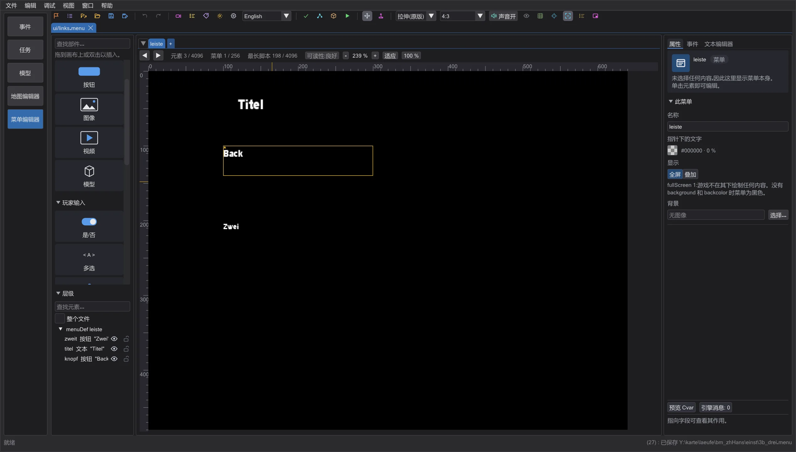
- 选择多个:从空白处拖出一个框,它会选中所有接触到的内容。Ctrl 或 Shift 用于添加,Ctrl+A 全选。已锁定和已隐藏的元素不会被选中。
- 右键单击元素或层级中的一行:剪切、复制、粘贴、复制副本、删除、置于顶层、置于底层、锁定、在预览中隐藏、保存为自己的模板。在画布上,菜单还会列出指针下的所有内容。
- 背景让单击穿过:填满整个屏幕的装饰不会被意外移动。要修改它,请在层级、右键菜单中或用 Alt+单击选择。
- 管理菜单:右键单击画布上方的标签可重命名、复制、删除或移动其菜单。重命名也会更改此文件中的
open和close。每项操作都是一个撤销步骤。 - 空间不足:画布上方的两个箭头可折叠左右面板。在小窗口中,左侧面板会自动折叠,视图开关会移到 视图 按钮后面。
条件:条件 选择设置是显示、隐藏、启用还是禁用元素。多选 元素的 选项 是文本和值的列表。列表和由游戏绘制的元素有 由游戏填充 分组;游戏无法读取的内容会被拒绝并给出提示,菜单保持完整。
交互与 Cvar#
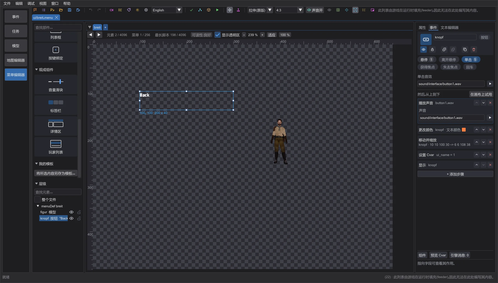
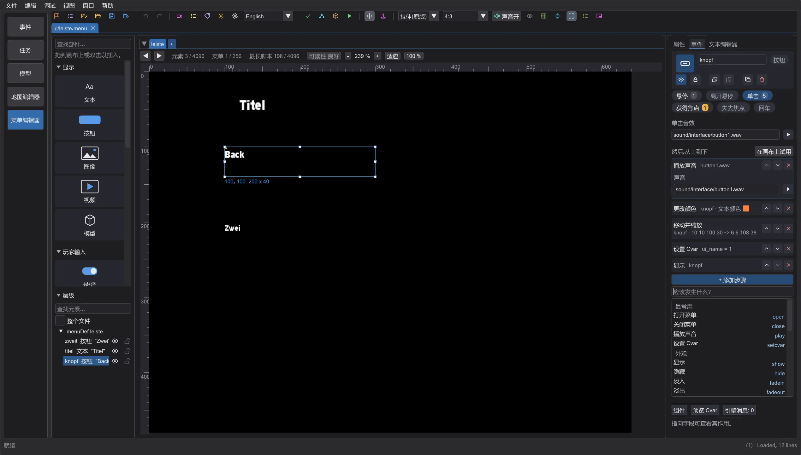
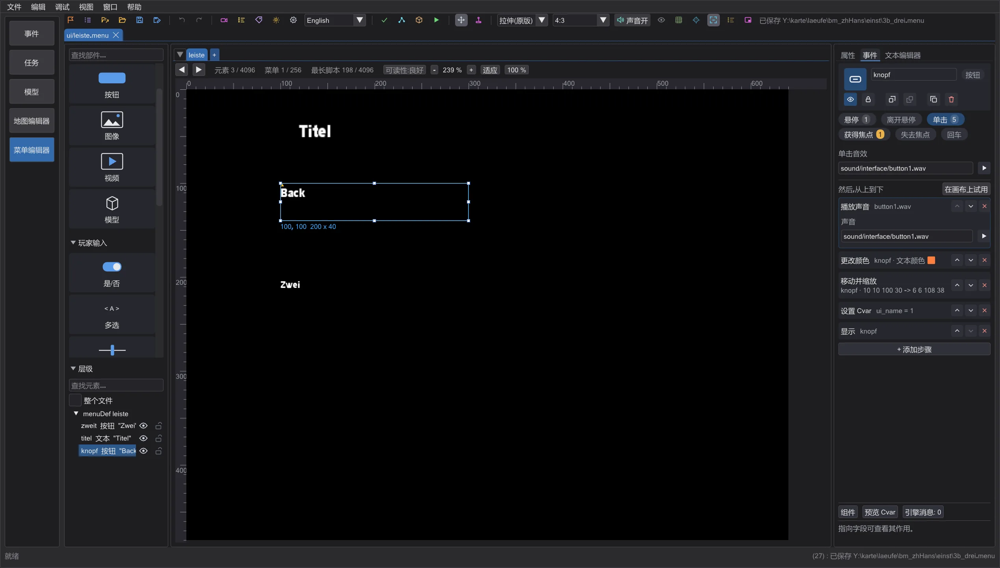
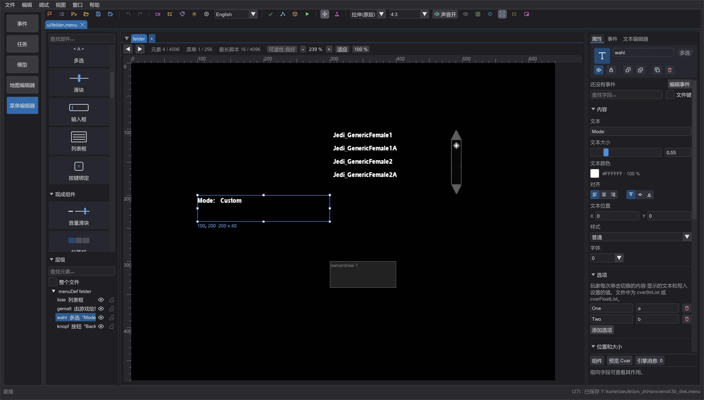
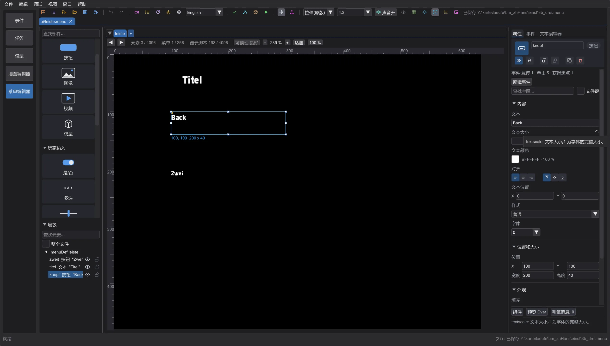
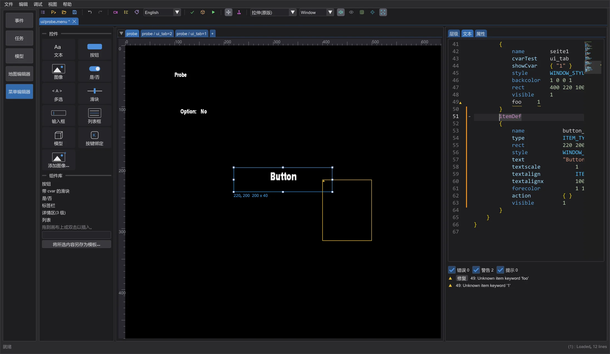
交互 像游戏一样运行菜单:移动指针时,指针下的每个项(包括装饰项)都执行 mouseEnter,焦点(onFocus)交给第一个能接受它的项(单人模式下不交给非活动项),它一直保留焦点,直到另一个项取得焦点;单击执行拥有焦点的项的 action,是/否、多选和滑块改变其 cvar,open、close、show、hide、setfocus、setcvar、setitemtext、transition 等与 ui_shared 中的行为一致。需要游戏的内容(声音、exec、uiScript)显示在 脚本日志 中。
预览 Cvar 列出菜单读取或设置的所有 cvar,控制可见性的排在前面,并附有出现的值。修改它们可查看其他状态。它们只存在于预览中——绝不会改动你的游戏配置。
代码编辑器#
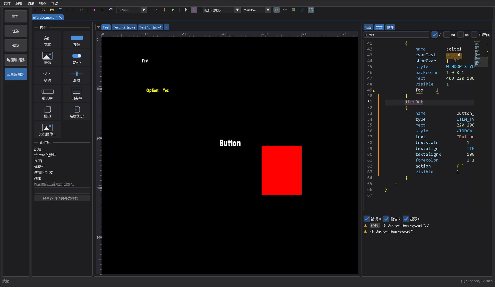
ui_tab 显示红色方框,单击“是/否”会改变 ui_probe。| Ctrl + wheel / Ctrl + 0 | 文本编辑器的字体大小,50% 到 300%,指针需在文本上方;Ctrl+0 恢复默认。只是视图:不是撤消步骤,不写入文件,大小会被记住 |
| Alt + Z | 切换长行自动换行,与 VS Code 相同(默认开启,文件不变);不换行时用 Shift+鼠标滚轮或底部滚动条横向滚动 |
| Ctrl + F / Ctrl + H | 查找和替换,与脚本区域相同(正则、大小写、全字匹配、所有打开的菜单)。“全部替换”是一个撤销步骤并报告数量;Ctrl+H 将光标放到替换框;匹配项在小地图中标出 |
| Ctrl + D / Ctrl + Shift + L / Alt + Click | 下一个匹配/所有匹配/额外光标(多光标) |
| Ctrl + Space | 自动补全:关键字、cvar、项名称、着色器路径、@MENUS 字符串 |
| F12 / Ctrl + Click | 跳转到光标下名称的 menuDef 或 itemDef |
| Ctrl + F2 / F2 / Shift + F2 | 书签,与脚本编辑器相同(也可单击边栏) |
| Ctrl + / , Tab / Shift + Tab | 注释行,缩进/取消缩进 |
边栏与脚本编辑器相同:橙色 = 保存后已更改,绿色 = 已更改并已保存,蓝色 = 恢复到打开时的状态。menuDef、itemDef 和脚本块可用行号旁的 +/- 折叠。单击画布上的项会跳到其 itemDef,光标位于某个 itemDef 中时会选中该项。
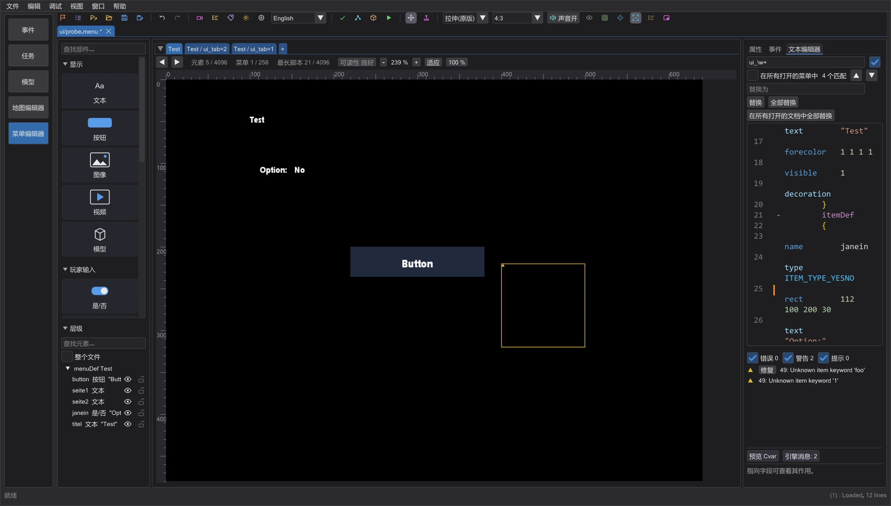
保存与导出#
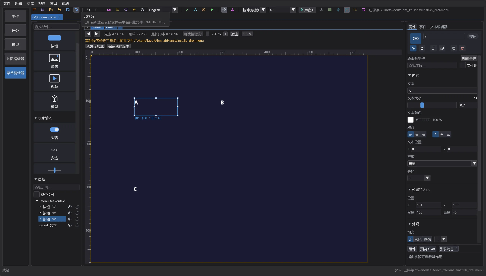
保存 按编辑器中的原样写入文本;从游戏打开的文件会保存到其他位置。导出 .pk3 将菜单(按其游戏路径)和你的图像打包为 .pk3。两者都绝不会写入游戏文件夹。